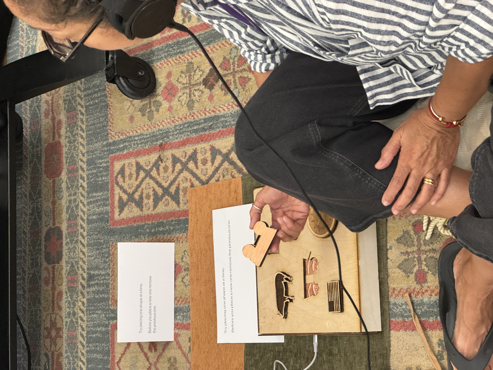

After finding a recording of my grandfather’s experience during WWII, I decided to create an interactive art piece.
The goal is to tell his story as a living testimony of that time and reflect on the conditions of children in war zones.
When you place a shape in the correct slot, you hear a different part of the recording.
a game where each shape is linked to a detail from my grandfather’s experience.